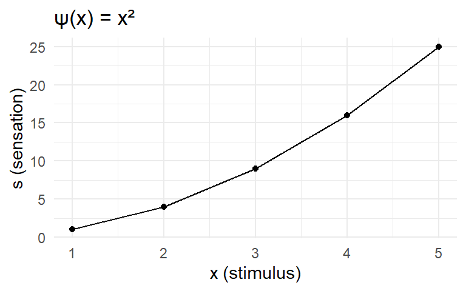

Warning: package 'ggplot2' was built under R version 4.4.3Mathematical Psychology Foundations
New Handbook of Mathematical Psychology Vol.3 - Preface
Mathematics in psychology is not about computing (adding, multiplying, etc.). It’s about conceptual clarity and avoiding conceptual confusions.
Before we can compute, we need to explicate our hidden assumptions. Often when we do this, we find they are not that compelling.
Measurement Scales
Entities are measured on specific scales: ordinal, interval, ratio.
For ratio scales, any two valid measurement functions f and g are related by:
\[f(x) = k \cdot g(x)\]
for some positive constant k (like meters vs centimeters).
Code
# Example: measuring the same stimulus in different units
stimulus <- c(1, 2, 3, 4, 5)
g_meters <- stimulus
f_centimeters <- 100 * stimulus
# Key property: RATIOS are preserved
data.frame(
stimulus = stimulus,
k_constant = 100,
meters = g_meters,
centimeters = f_centimeters,
ratio_m = g_meters / g_meters[1],
ratio_cm = f_centimeters / f_centimeters[1]
) stimulus k_constant meters centimeters ratio_m ratio_cm
1 1 100 1 100 1 1
2 2 100 2 200 2 2
3 3 100 3 300 3 3
4 4 100 4 400 4 4
5 5 100 5 500 5 5Luce’s Principle of Theory Construction
Luce (1959) used measurement scales to constrain psychophysical functions.
Setup:
- x = stimulus magnitude (ratio scale)
- s = sensation magnitude (ratio scale)
- ψ = psychophysical function: s = ψ(x)
Key idea: If we rescale the stimulus by factor k (x → kx), the function should still work with some corresponding rescaling of sensation (s → cs).
Concrete example with ψ(x) = x²
Let’s use a known psychophysical function and trace through the derivation.
Code
# Define an example psychophysical function: psi(x) = x^2
psi <- function(x) x^2
# Original measurements
x <- c(1, 2, 3, 4, 5)
s <- psi(x)
data.frame(x = x, s = s) x s
1 1 1
2 2 4
3 3 9
4 4 16
5 5 25Code
ggplot(data.frame(x = x, s = s), aes(x = x, y = s)) +
geom_line() +
geom_point() +
labs(title = "ψ(x) = x²", x = "x (stimulus)", y = "s (sensation)") +
theme_minimal()
Now suppose we change our measurement unit for x by factor k = 3 (like switching units):
Code
k <- 3
x_new <- k * x # rescaled stimulus measurements
# What is s when we plug in the new x?
s_from_new_x <- psi(x_new)
data.frame(
x_original = x,
x_rescaled = x_new,
s_original = s,
s_from_rescaled = s_from_new_x
) x_original x_rescaled s_original s_from_rescaled
1 1 3 1 9
2 2 6 4 36
3 3 9 9 81
4 4 12 16 144
5 5 15 25 225Luce’s principle requires: ψ(kx) = K(k) · ψ(x)
We need to find K(k). We know ψ(kx) and ψ(x), so we can solve for K(k):
\[K(k) = \frac{\psi(kx)}{\psi(x)} = c\]which c is the constant for the s
Code
# For x = 1:
s_from_new_x[1] / s[1] # psi(3*1) / psi(1) = 9 / 1 = 9[1] 9Code
# For x = 2:
s_from_new_x[2] / s[2] # psi(3*2) / psi(2) = 36 / 4 = 9[1] 9Code
# For x = 3:
s_from_new_x[3] / s[3] # psi(3*3) / psi(3) = 81 / 9 = 9[1] 9K(k) = 9 for all x values! This is crucial - K(k) must depend only on k, not on x.
And notice: K(k) = 9 = 3² = k². So for ψ(x) = x², we get K(k) = k².
The general pattern: For ψ(x) = x^β, we get K(k) = k^β
Code
# Test with k = 3, x = 4, different beta values
k <- 3
x <- 4
# beta = 0.5
(k * x)^0.5 # psi(kx)[1] 3.464102Code
k^0.5 * x^0.5 # K(k) * psi(x)[1] 3.464102Code
# beta = 1
(k * x)^1[1] 12Code
k^1 * x^1[1] 12Code
# beta = 2
(k * x)^2[1] 144Code
k^2 * x^2[1] 144Code
# beta = 3
(k * x)^3[1] 1728Code
k^3 * x^3[1] 1728All pairs match. The pattern holds for any β.
Why logarithm fails:
Let’s try the same approach with ψ(x) = log(x):
Code
# psi(x) = log(x)
k <- 3
# Try to find K(k) = psi(kx) / psi(x) for different x values:
# For x = 2:
log(k * 2) / log(2) [1] 2.584963Code
# For x = 4:
log(k * 4) / log(4) [1] 1.792481Code
# For x = 8:
log(k * 8) / log(8) [1] 1.528321The ratio ψ(kx)/ψ(x) gives different values for different x!
For power function: K(k) = 9 for all x (constant) For log function: K(k) = 2.58, 1.79, 1.53… (depends on x)
Luce’s principle requires K(k) to depend only on k, not on x. Log fails this requirement.